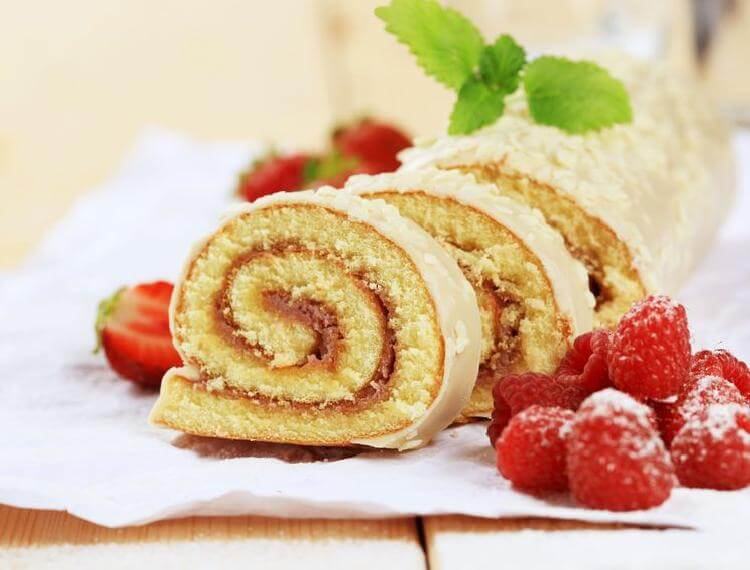
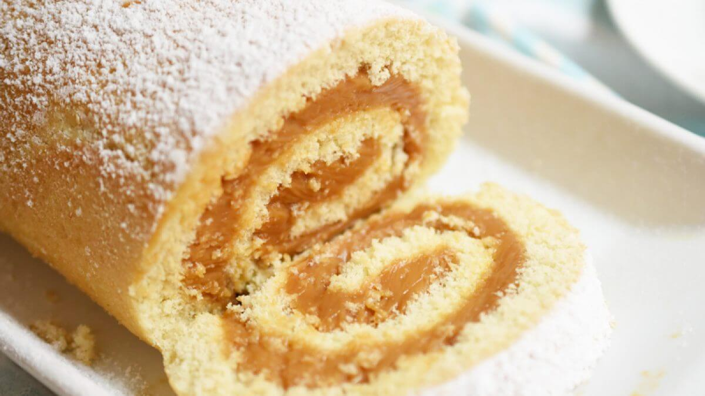
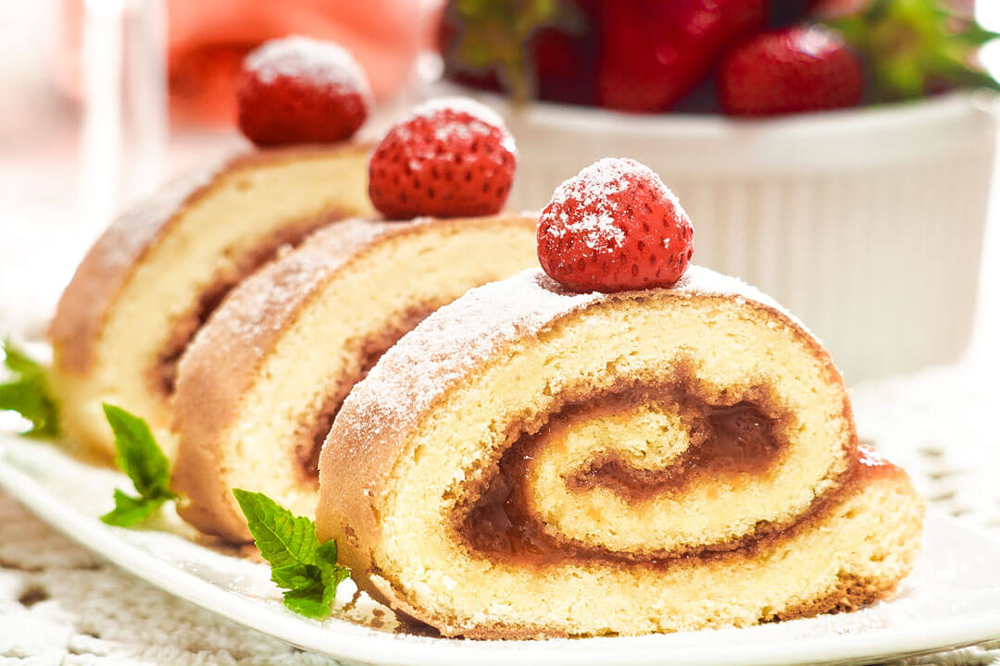

Brazo Gitano
 
Description
◎ Ingredients
- 1 ⅓ cups all-purpose flour
- 2 teaspoons baking powder
- ½ teaspoon salt
- ⅓ cup chilled water
- ½ teaspoon vanilla extract
- ½ teaspoon fresh lime juice
- 4 eggs
- 1 ⅓ cups white sugar
- ⅛ cup sifted confectioners' sugar, or as needed
◎Cream (If you don't have Arequipe)
- ⅓ cup cornstarch
- 2 cups milk
- 2 egg yolks
- ¾ cup white sugar
- ¼ teaspoon salt
- 1 small lime, zested
◎ Directions
- Preheat the oven to 350 degrees F (175 degrees C). Grease an 18x12x1-inch aluminum pan. Line with parchment paper and grease paper generously.
- Sift flour, baking powder, and salt together in a bowl. Set aside.
- Combine water, vanilla extract, and lime juice in a separate bowl. Set aside.
- Beat eggs in a mixing bowl using an electric mixer on high speed for 1 minute. Reduce speed to medium and add white sugar gradually. Reduce speed to low and add flour mixture alternately with water mixture, mixing until well combined. Pour batter into the prepared pan.
- Bake in the preheated oven until a toothpick inserted into the center comes out clean, about 20 minutes.
- While cake is baking, dissolve cornstarch in 1 cup milk in a saucepan over medium heat until well blended. Add egg yolks and mix well. Pour in remaining milk, sugar, salt, and lime zest. Mix over medium heat using a wooden spoon until boiling; remove from heat. Keep filling warm if cake is still baking.
- Place a large, damp cloth on a table and sprinkle generously with sifted confectioners' sugar about 5 minutes before cake has finished baking.
- Remove cake from the oven. Release edges of cake using a knife. Turn cake over onto the sugar-coated cloth; remove parchment paper from cake and trim edges. Pour cream filling over cake immediately, spreading almost to the edges. Roll cake up from the bottom.
- Cut roll in the middle to divide into two 9-inch rolls. Transfer to 2 flat platters using 2 wide spatulas. Sprinkle rolls with additional confectioners' sugar just prior to serving.
Click here for going back to the main menu!